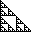
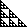
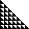
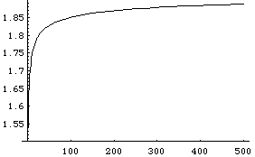

| Now we generalize the observation that in the n -> infinity limit
almost all binomial coefficients are even, that is, multiples of 2. |
| We deduced this by shading the odd numbers, those
not multiples of 2, and noting this produced a gasket of dimension
log(3)/log(2). Because dim < 2, almost all
coefficients are multiples of 2. |
 |
| Shading the numbers congruent to 1 or 2 (mod 3)
produces a gasket of dimension log(6)/log(3). Consequently, almost
all coefficients are multiples of 3. |
 |
| Shading the numbers congruent to 1, 2, 3, or 4 (mod 5)
produces a gasket of dimension log(15)/log(5). Consequently, almost
all coefficients are multiples of 5. |
|
| Shading the numbers congruent to 1, 2, 3, 4, 5, or 6 (mod 7)
produces a gasket of dimension log(28)/log(7). Consequently, almost
all coefficients are multiples of 7. |
 |
|
| For every prime n, shading the numbers congruent to
1, 2, 3, ..., or n-1 (mod n) produces a gasket of dimension
log(n(n+1)/2)/log(n) < 2. |
| log(n(n+1)/2)/log(n) |
 |
n |
|
| Consequently, in the n -> infinity limit, almost all binomial
coefficients are multiples of all prime numbers. Well, some care is needed in taking the
limits. |
|